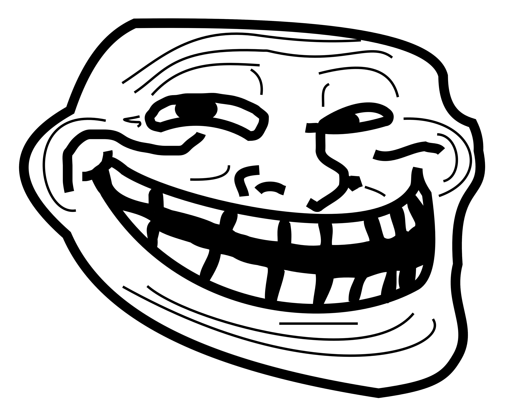

The King of Rage Comics
Trollface was created by Carlos Ramirez (aka Whynne) in 2008. It started as a simple MS Paint drawing meant to represent someone who trolls or annoys others online.

Trollface became one of the most recognizable faces of early internet culture. It dominated rage comics, forums, and meme pages from 2009–2012 and still appears today.